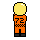
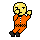
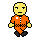

Work flow
In this project I made my own state machine. With this I made 10 different states the player could be in: Climbing, Crouching, Falling, Hanging, Idle, Jumping, Pulling, Rising, Throwing and Walking





I used this state machine to transition from different animations or change physics values of the player. For example if the player is in the falling state increase the gravity so you have more control over the jump.